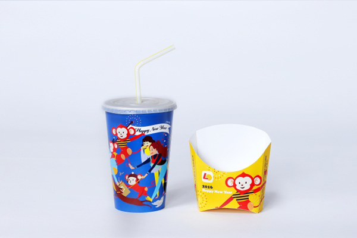
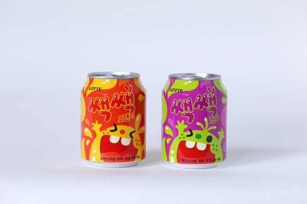
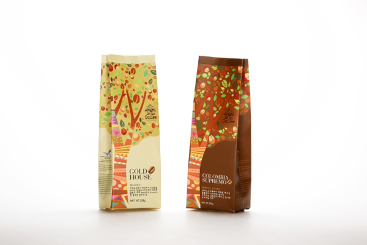
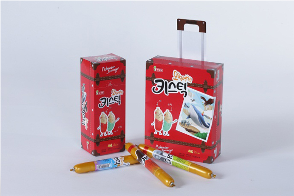

home > 홍보센터 > 공모전
design story
디자인, 제품의 스토리를 말하다.
소개 및 공고
롯데 패키지 디자인 공모전 LOTTE DESIGN STORY는 상용화 된 제품의 패키지 리뉴얼 및 창의적 디자인 발굴을 중점으로, 제품이 갖고 있는 다양한 스토리를 디자인으로 표현하는 패키지 디자인 프로젝트입니다. 평소 자주 접하지만 소비자들이 쉽게 알 수 없었던 롯데 각 제품만의 탄생 배경 그리고 맛에 얽힌 다양하고 새로운 이야기들을 패키지에 그려내는 STORY DESIGNER에 도전하세요.
공모요강 바로가기수상작품
-

2015년도 대상
수상작 내용보기- 주제 : 키스틱 프렌즈
- 수상작 설명 : 키스틱은 "청춘이 즐겨 먹는 간식"이라는 수식어에 맞게 대한민국 청춘들로부터 꾸준한 사랑을 받고있는 간식용 소시지입니다. 이 수상작은 기존 키스틱이 가지고 있던 청춘과 여행이라는 디자인콘셉트를 7개의 각기 다른 개성 넘치는 캐릭터들로 재탄생시킨 것이 특징입니다.
- 내용 닫기
-

2015년도 금상
수상작 내용보기- 주제 : 롯데리아 포테이토 카톤과 콜라컵
- 수상작 설명 : 콜라컵과 포테이토 카톤의 시즌성 디자인으로, 2016년 원숭이해를 주제로 디자인된 작품입니다. 새해를 롯데리아로부터 시작하는 사람들과 밝은 축제 분위기를 이끌어오는 붉은 원숭이 로키들을 따뜻한 일러스트로 표현하였습니다
- 내용 닫기
-

2015년도 은상
수상작 내용보기- 주제 : 쌕쌕과 신나는 상상 톡톡과 즐거운 만남
- 수상작 설명 : 씹는 것을 좋아하는 아이들을 대상으로 씹어먹는 행위를 재미있고 신나는 활동으로 표현하고자 디자인된 작품입니다. 아이들이 쉽고 편하게 접근할 수 있도록 친근한 몬스터의 이미지와 인지하기 쉬운 색상을 사용한 것이 특징입니다.
- 내용 닫기
-

2015년도 동상
수상작 내용보기- 주제 : 청춘을 말하는 키스틱
- 수상작 설명 : 간식이라는 특징을 살리기 위해 표정에서도 먹고 싶은, 맛있어 보이는 표정을 다양한 표정으로 연출함으로써 맛있고 재미있게 먹을 수 있도록 디자인된 작품입니다.
- 내용 닫기
-

2014년도 대상
수상작 내용보기- 주제 : 커피나무에서 전하는 향기
- 수상작 설명 : 원두를 구매할 때 부드럽고 깊은 맛 또는 향에 의해 구매를 합니다. 이러한 특성을 고려한 후 직접 커피나무에서 재배해 온 깊은 향과 커피나무와 원두 열매를 일러스트로 표현하여 전체적인 분위기를 커피나무의 고급스럽움과 열매의 특성을 살려 원두의 깊은 맛을 살렸습니다.
- 내용 닫기
-

2013년도 장려상
수상작 내용보기- 주제 : 맛있는 키스틱의 맛있는 청춘레터
- 수상작 설명 : 키스틱이 청춘들을 위해 보내는 메시지입니다. 야근하는 직장인들, 밤 늦게 과제하는 대학생, 사랑하는 연인 등 따뜻한 말 한마디 전하고 싶은 사람들을 위해 맛있는 청춘간식 키스틱으로 내 마음을 전해보시기 바랍니다.
- 내용 닫기